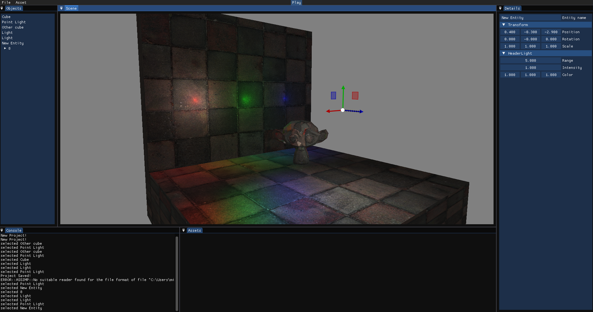
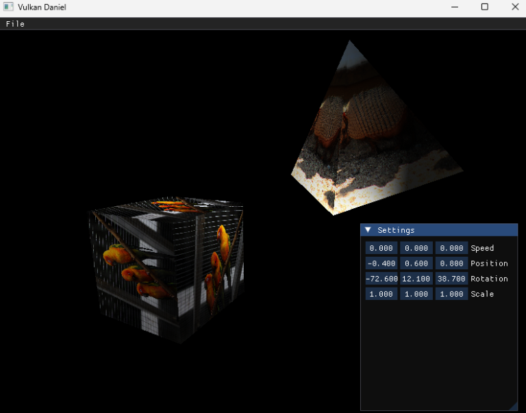
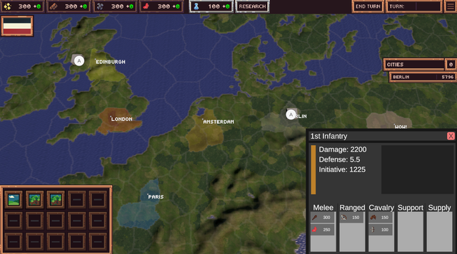

OpenGL 3D Game Engine
An OpenGL game engine with 3D model support and save functionality, with an intuitive ImGui interface.

OpenGL · C++ · GLSLI'm Daniel, a passionate game developer with a strong interest in computer graphics. I enjoy learning about graphics programming by creating my own graphics engines and shaders for my games.
An OpenGL game engine with 3D model support and save functionality, with an intuitive ImGui interface.

OpenGL · C++ · GLSLA graphics engine developed using Vulkan with fuctionality for multiple meshes, shaders, materials, and lighting.

Vulkan · C++ · GLSLA turn based strategy game with a focus on using shaders and tile lookup textures for map rendering. Inspired by the techniques used within Paradox's grand strategy games.

Unity · C# · HLSL